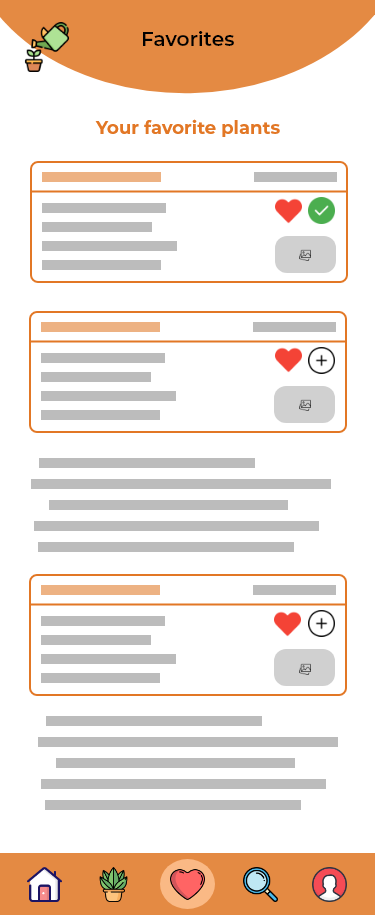
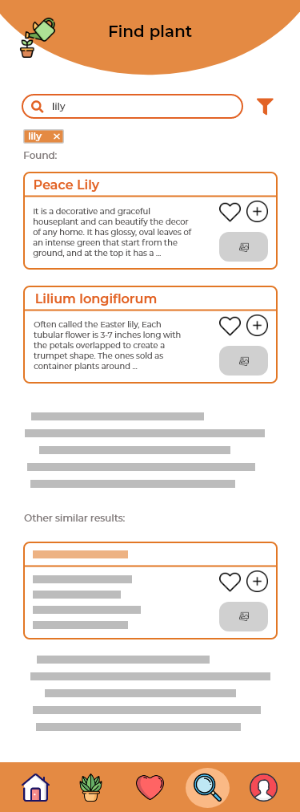
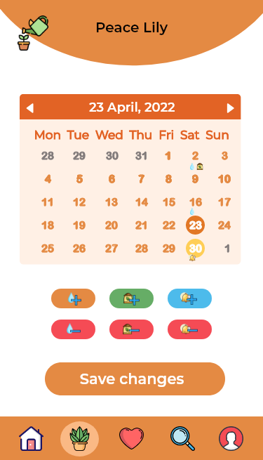

I created a graphical interface for an application that helps people to take care of their plants.
There are more and more people in the world who are passionate about nature and with plants in general. Not all plants need to be watered as often as others, and also not all plants need to be fertilized as often (if you want your plants to live as much
as possible). With this app a person can keep track of their interaction with their little buddies.
In the same time this app comes in handy for those people that want to find the right informations fast and with no further research, because it can be difficult to find the right data when there is a lot of contradictory
and overwhelming informations on the internet.
The mobile application opens with the start page, which after taping a user can log in or create a new account if he doesn't have one. After authentication/registration, he is redirected to the main page where there are two possible outcomes: either the
page has only a discover section and instagram community section, either a list of plants that need to be taken care of. From here, the user can update watering/adding fertilizer informations or can use the bottom menu to go to the plants
he saved, to the plants that he currently has, to his profile or to the searching feature.
The application contains 10 pages.
The Start page is a loading screen, it appears for a brief moment before the app moves on to the login page.
In this page the user can log in into the app using his email and password, or log in using facebook, instagram or google if the account was created with one of this three apps. He can also navigate to the register page if he already has an account.
This page offers the user the possibility of creating an account by entering personal data such as name, email and password, or register using an account that he has on an app such as google, facebook or instagram. He can also navigate to the login page if he already has an account.
After the user logged in or registered, he has the possibility to see his profile containing his name or edit it, he can see the plants he saved, or he can log out.
Once the user has logged in/registered, he will be redirected to the home page. Depending on the method that he entered to the app (login or register), the home page can either contain the plants that need some attention, either only a section of discover new things about plants and instagram community will be available on the page.
Home page without notifications
Home page with notifications
On this page the user can see the plants that he saved and has the possibility to add them in their collection of plants by taping the "+" icon, or remove them from saved plants by taping heart icon next to each plant.
This page offers the possibility to search for a specific plant and add them to the collection or save them in favorites list.
In calendar page the user can mark that he watered and/or added fertilizer on a specific plant for the current day, or he can choose a previous date.
This page can contain no plants, in which case the user has the possibility to add some plants by taping the "+" icon. In case the user has some plants added, they will appear here with the informations about last watering and fertilizer date, the possibility to remove a plant that he no longer has, and can mark them as watered/fertilized or add a note.
My plants page with empty bin
My plants with filters
My plants without filters
This page contains relevant informations about a specific plant, such as description and some recomandations as how often the plant needs to be watered, fertilized and how much sun it needs. If the plant is not added as one of the user's plants, he has the possibility to add it, and if it is already added he can see modify the interaction that he had with the plant, and can see the notes that he added and edit or remove them. In this case he can also navigate to the next plant.
Searched plant that is not in added in my plants
Searched plant added in my plants
A wireframe for this app: Application wireframe
Social mobile interaction design patterns used in the wireframes/prototypes: